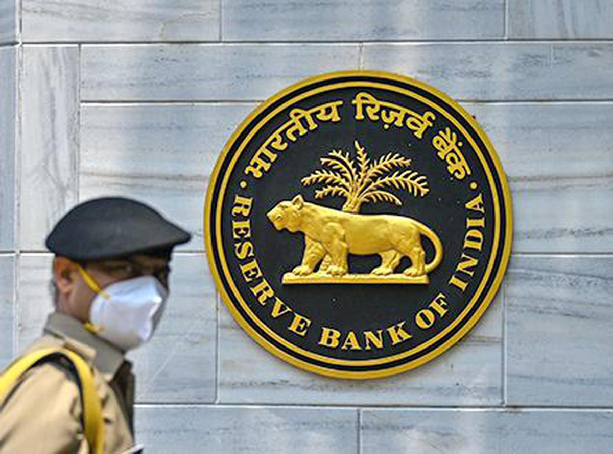

RBI places 3 urban co-operative banks under Directions
RBI has placed restrictions on deposit withdrawals under the Directions. Depositors will be allowed to withdraw not more than ₹10,000 of the total balance across all savings bank or current accounts or any other account, subject to the conditions stated in the Directions.
266 3